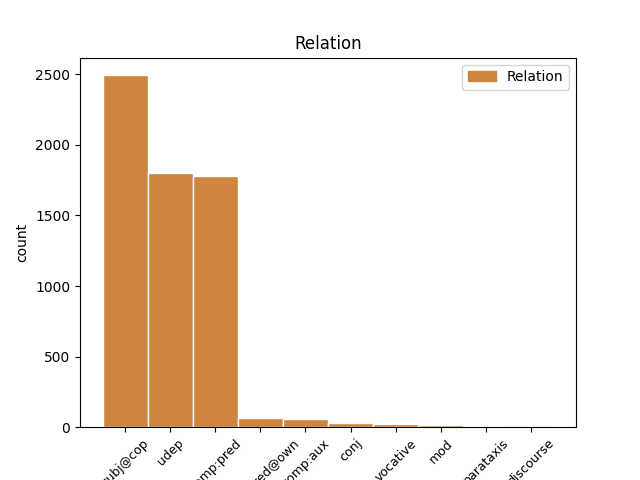
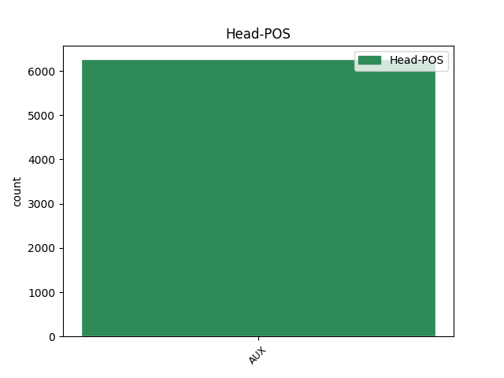
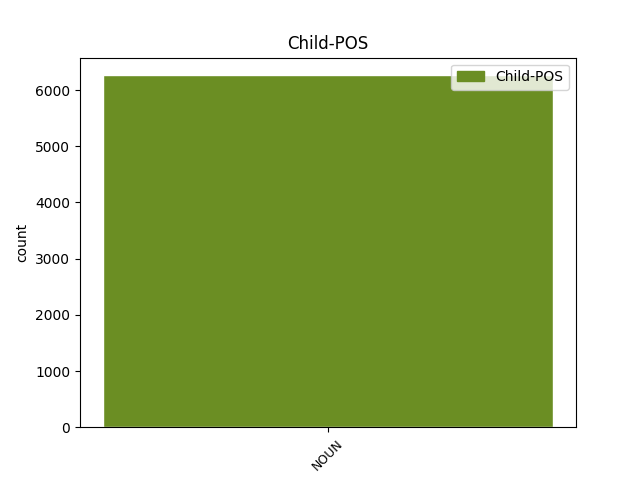

Distribution of features within this leaf



Agreement Rules sorted by frequency.
- When the dependent token is the subject(subj@cop) of the head token, and the head token is AUX and the dependent token is NOUN.
1 Tekijät tekijä NOUN N Case=Nom|Derivation=Ja|Number=Plur 2 subj@cop _ _
2 ovat olla AUX V Mood=Ind|Number=Plur|Person=3|Tense=Pres|VerbForm=Fin|Voice=Act 0 _ _ _
3 autonomiseen _ _ _ _ 0 _ _ _
4 vasemmistoon _ _ _ _ 0 _ _ _
5 kuuluvia _ _ _ _ 0 _ _ _
6 henkilöitä _ _ _ _ 0 _ _ _
7 , _ _ _ _ 0 _ _ _
8 jotka _ _ _ _ 0 _ _ _
9 tavallisesti _ _ _ _ 0 _ _ _
10 esiintyvät _ _ _ _ 0 _ _ _
11 nimikkeiden _ _ _ _ 0 _ _ _
12 " _ _ _ _ 0 _ _ _
13 Antifascistisk _ _ _ _ 0 _ _ _
14 aktion _ _ _ _ 0 _ _ _
15 " _ _ _ _ 0 _ _ _
16 tai _ _ _ _ 0 _ _ _
17 " _ _ _ _ 0 _ _ _
18 Revolutionära _ _ _ _ 0 _ _ _
19 fronten _ _ _ _ 0 _ _ _
20 " _ _ _ _ 0 _ _ _
21 alla _ _ _ _ 0 _ _ _
22 . _ _ _ _ 0 _ _ _
1 Tekijät _ _ _ _ 0 _ _ _
2 ovat olla AUX V Mood=Ind|Number=Plur|Person=3|Tense=Pres|VerbForm=Fin|Voice=Act 0 _ _ _
3 autonomiseen _ _ _ _ 0 _ _ _
4 vasemmistoon _ _ _ _ 0 _ _ _
5 kuuluvia _ _ _ _ 0 _ _ _
6 henkilöitä henkilö NOUN N Case=Par|Number=Plur 2 comp:pred _ SpaceAfter=No
7 , _ _ _ _ 0 _ _ _
8 jotka _ _ _ _ 0 _ _ _
9 tavallisesti _ _ _ _ 0 _ _ _
10 esiintyvät _ _ _ _ 0 _ _ _
11 nimikkeiden _ _ _ _ 0 _ _ _
12 " _ _ _ _ 0 _ _ _
13 Antifascistisk _ _ _ _ 0 _ _ _
14 aktion _ _ _ _ 0 _ _ _
15 " _ _ _ _ 0 _ _ _
16 tai _ _ _ _ 0 _ _ _
17 " _ _ _ _ 0 _ _ _
18 Revolutionära _ _ _ _ 0 _ _ _
19 fronten _ _ _ _ 0 _ _ _
20 " _ _ _ _ 0 _ _ _
21 alla _ _ _ _ 0 _ _ _
22 . _ _ _ _ 0 _ _ _
1 Väkiluku _ _ _ _ 0 _ _ _
2 on olla AUX V Mood=Ind|Number=Sing|Person=3|Tense=Pres|VerbForm=Fin|Voice=Act 0 _ _ _
3 kasvanut _ _ _ _ 0 _ _ _
4 vuoden _ _ _ _ 0 _ _ _
5 aikana _ _ _ _ 0 _ _ _
6 23 000 _ _ _ _ 0 _ _ _
7 hengellä henki NOUN N Case=Ade|Number=Sing 2 udep _ _
8 ja _ _ _ _ 0 _ _ _
9 näin _ _ _ _ 0 _ _ _
10 kasvu _ _ _ _ 0 _ _ _
11 on _ _ _ _ 0 _ _ _
12 ollut _ _ _ _ 0 _ _ _
13 0,4 _ _ _ _ 0 _ _ _
14 prosenttia _ _ _ _ 0 _ _ _
15 . _ _ _ _ 0 _ _ _
1 Risperidon _ _ _ _ 0 _ _ _
2 aiheuttaa _ _ _ _ 0 _ _ _
3 kömpelyyttä _ _ _ _ 0 _ _ _
4 , _ _ _ _ 0 _ _ _
5 eikä _ _ _ _ 0 _ _ _
6 suositella _ _ _ _ 0 _ _ _
7 autolla _ _ _ _ 0 _ _ _
8 ajamista _ _ _ _ 0 _ _ _
9 eikä ei AUX V Clitic=Ka|Number=Sing|Person=3|Polarity=Neg|VerbForm=Fin|Voice=Act 0 _ _ _
10 raskaiden _ _ _ _ 0 _ _ _
11 työkoneiden _ _ _ _ 0 _ _ _
12 käyttöä käyttö NOUN N Case=Par|Number=Sing 9 comp:aux _ _
13 risperidonin _ _ _ _ 0 _ _ _
14 vaikutuksen _ _ _ _ 0 _ _ _
15 alaisena _ _ _ _ 0 _ _ _
16 . _ _ _ _ 0 _ _ _
1 Maksu _ _ _ _ 0 _ _ _
2 perittäisiin _ _ _ _ 0 _ _ _
3 verotuksen _ _ _ _ 0 _ _ _
4 yhteydessä _ _ _ _ 0 _ _ _
5 riippumatta _ _ _ _ 0 _ _ _
6 siitä _ _ _ _ 0 _ _ _
7 , _ _ _ _ 0 _ _ _
8 onko olla AUX V Clitic=Ko|Mood=Ind|Number=Sing|Person=3|Tense=Pres|VerbForm=Fin|Voice=Act 0 _ _ _
9 henkilöllä henkilö NOUN N Case=Ade|Number=Sing 8 comp:pred@own _ _
10 televisiota _ _ _ _ 0 _ _ _
11 tai _ _ _ _ 0 _ _ _
12 tietokonetta _ _ _ _ 0 _ _ _
13 tai _ _ _ _ 0 _ _ _
14 onko _ _ _ _ 0 _ _ _
15 hänellä _ _ _ _ 0 _ _ _
16 maksukykyä _ _ _ _ 0 _ _ _
17 . _ _ _ _ 0 _ _ _
1 Hän _ _ _ _ 0 _ _ _
2 on olla AUX V Mood=Ind|Number=Sing|Person=3|Tense=Pres|VerbForm=Fin|Voice=Act 0 _ _ _
3 naimisissa _ _ _ _ 0 _ _ _
4 ja _ _ _ _ 0 _ _ _
5 kolmen _ _ _ _ 0 _ _ _
6 lapsen _ _ _ _ 0 _ _ _
7 isä isä NOUN N Case=Nom|Number=Sing 2 conj _ SpaceAfter=No
8 . _ _ _ _ 0 _ _ _
1 Haluan _ _ _ _ 0 _ _ _
2 korostaa _ _ _ _ 0 _ _ _
3 , _ _ _ _ 0 _ _ _
4 että _ _ _ _ 0 _ _ _
5 toimikunnat _ _ _ _ 0 _ _ _
6 ovat olla AUX V Mood=Ind|Number=Plur|Person=3|Tense=Pres|VerbForm=Fin|Voice=Act 0 _ _ _
7 hyvät _ _ _ _ 0 _ _ _
8 ihmiset ihminen NOUN N Case=Nom|Number=Plur 6 vocative _ _
9 juuri _ _ _ _ 0 _ _ _
10 Teitä _ _ _ _ 0 _ _ _
11 varten _ _ _ _ 0 _ _ _
12 ja _ _ _ _ 0 _ _ _
13 kaikille _ _ _ _ 0 _ _ _
14 avoimia _ _ _ _ 0 _ _ _
15 ! _ _ _ _ 0 _ _ _
1 Hioketta _ _ _ _ 0 _ _ _
2 valmistetaan _ _ _ _ 0 _ _ _
3 tyypillisesti _ _ _ _ 0 _ _ _
4 kuusesta _ _ _ _ 0 _ _ _
5 , _ _ _ _ 0 _ _ _
6 koska _ _ _ _ 0 _ _ _
7 kuusen _ _ _ _ 0 _ _ _
8 uuteainepitoisuus _ _ _ _ 0 _ _ _
9 on olla AUX V Mood=Ind|Number=Sing|Person=3|Tense=Pres|VerbForm=Fin|Voice=Act 0 _ _ _
10 mäntyä mänty NOUN N Case=Par|Number=Sing 9 mod _ _
11 alhaisempi _ _ _ _ 0 _ _ _
12 . _ _ _ _ 0 _ _ _
1 5000 _ _ _ _ 0 _ _ _
2 euron _ _ _ _ 0 _ _ _
3 vaalipatsaan _ _ _ _ 0 _ _ _
4 ostajiksi _ _ _ _ 0 _ _ _
5 on olla AUX V Mood=Ind|Number=Sing|Person=3|Tense=Pres|VerbForm=Fin|Voice=Act 0 _ _ _
6 paljastettu _ _ _ _ 0 _ _ _
7 : _ _ _ _ 0 _ _ _
8 Kirjapaino _ _ _ _ 0 _ _ _
9 Kehitys _ _ _ _ 0 _ _ _
10 Oy oy NOUN N Abbr=Yes|Case=Nom|Number=Sing 5 parataxis _ _
11 1 _ _ _ _ 0 _ _ _
12 kpl _ _ _ _ 0 _ _ _
13 , _ _ _ _ 0 _ _ _
14 Vakuutusyhtiö _ _ _ _ 0 _ _ _
15 Turva _ _ _ _ 0 _ _ _
16 1 _ _ _ _ 0 _ _ _
17 kpl _ _ _ _ 0 _ _ _
18 , _ _ _ _ 0 _ _ _
19 Metalliliitto _ _ _ _ 0 _ _ _
20 4 _ _ _ _ 0 _ _ _
21 kpl _ _ _ _ 0 _ _ _
22 , _ _ _ _ 0 _ _ _
23 Kemianliitto _ _ _ _ 0 _ _ _
24 1 _ _ _ _ 0 _ _ _
25 kpl _ _ _ _ 0 _ _ _
26 , _ _ _ _ 0 _ _ _
27 KTV _ _ _ _ 0 _ _ _
28 3 _ _ _ _ 0 _ _ _
29 kpl _ _ _ _ 0 _ _ _
30 , _ _ _ _ 0 _ _ _
31 Jyväskylän _ _ _ _ 0 _ _ _
32 Työväenyhdistys _ _ _ _ 0 _ _ _
33 1 _ _ _ _ 0 _ _ _
34 kpl _ _ _ _ 0 _ _ _
35 , _ _ _ _ 0 _ _ _
36 Ripella _ _ _ _ 0 _ _ _
37 Oy _ _ _ _ 0 _ _ _
38 1 _ _ _ _ 0 _ _ _
39 kpl _ _ _ _ 0 _ _ _
40 , _ _ _ _ 0 _ _ _
41 Kustannusosakeyhtiö _ _ _ _ 0 _ _ _
42 Kansanvalta _ _ _ _ 0 _ _ _
43 1 _ _ _ _ 0 _ _ _
44 kpl _ _ _ _ 0 _ _ _
45 , _ _ _ _ 0 _ _ _
46 Suomen _ _ _ _ 0 _ _ _
47 Viestintärahoitus _ _ _ _ 0 _ _ _
48 Oy _ _ _ _ 0 _ _ _
49 1 _ _ _ _ 0 _ _ _
50 kpl _ _ _ _ 0 _ _ _
51 , _ _ _ _ 0 _ _ _
52 Turun _ _ _ _ 0 _ _ _
53 Työväen _ _ _ _ 0 _ _ _
54 Säätiö _ _ _ _ 0 _ _ _
55 1 _ _ _ _ 0 _ _ _
56 kpl _ _ _ _ 0 _ _ _
57 , _ _ _ _ 0 _ _ _
58 Urheiluopistosäätiö _ _ _ _ 0 _ _ _
59 2 _ _ _ _ 0 _ _ _
60 kpl _ _ _ _ 0 _ _ _
61 , _ _ _ _ 0 _ _ _
62 Sdp:n _ _ _ _ 0 _ _ _
63 eduskuntaryhmä _ _ _ _ 0 _ _ _
64 1 _ _ _ _ 0 _ _ _
65 kpl _ _ _ _ 0 _ _ _
66 , _ _ _ _ 0 _ _ _
67 Palvelualojen _ _ _ _ 0 _ _ _
68 ammattiliitto _ _ _ _ 0 _ _ _
69 PAM _ _ _ _ 0 _ _ _
70 4 _ _ _ _ 0 _ _ _
71 kpl _ _ _ _ 0 _ _ _
72 , _ _ _ _ 0 _ _ _
73 Palkansaajasäätiö _ _ _ _ 0 _ _ _
74 1 _ _ _ _ 0 _ _ _
75 kpl _ _ _ _ 0 _ _ _
76 , _ _ _ _ 0 _ _ _
77 Tradeka-yhtymä _ _ _ _ 0 _ _ _
78 1 _ _ _ _ 0 _ _ _
79 kpl _ _ _ _ 0 _ _ _
80 , _ _ _ _ 0 _ _ _
81 KSL _ _ _ _ 0 _ _ _
82 1 _ _ _ _ 0 _ _ _
83 kpl _ _ _ _ 0 _ _ _
84 , _ _ _ _ 0 _ _ _
85 TSL _ _ _ _ 0 _ _ _
86 1kpl _ _ _ _ 0 _ _ _
87 , _ _ _ _ 0 _ _ _
88 SAK _ _ _ _ 0 _ _ _
89 1 _ _ _ _ 0 _ _ _
90 kpl _ _ _ _ 0 _ _ _
91 , _ _ _ _ 0 _ _ _
92 Helsingin _ _ _ _ 0 _ _ _
93 Työväenyhdistys _ _ _ _ 0 _ _ _
94 1 _ _ _ _ 0 _ _ _
95 kpl _ _ _ _ 0 _ _ _
96 , _ _ _ _ 0 _ _ _
97 Viestintäalan _ _ _ _ 0 _ _ _
98 ammattiliitto _ _ _ _ 0 _ _ _
99 1 _ _ _ _ 0 _ _ _
100 kpl _ _ _ _ 0 _ _ _
1 Voi _ _ _ _ 0 _ _ _
2 vittu _ _ _ _ 0 _ _ _
3 kusipää kusi#pää NOUN N Case=Nom|Number=Sing 5 discourse _ _
4 sulla _ _ _ _ 0 _ _ _
5 on olla AUX V Mood=Ind|Number=Sing|Person=3|Tense=Pres|VerbForm=Fin|Voice=Act 0 _ _ _
6 joku _ _ _ _ 0 _ _ _
7 toinen _ _ _ _ 0 _ _ _
8 ! _ _ _ _ 0 _ _ _
Disagree Examples:
1 Onneksi _ _ _ _ 0 _ _ _
2 sitä _ _ _ _ 0 _ _ _
3 ei ei AUX V Number=Sing|Person=3|Polarity=Neg|VerbForm=Fin|Voice=Act 0 _ _ _
4 missään _ _ _ _ 0 _ _ _
5 vaiheessa _ _ _ _ 0 _ _ _
6 restauroitu _ _ _ _ 0 _ _ _
7 samalla _ _ _ _ 0 _ _ _
8 tavoin tapa NOUN N Case=Ins|Number=Plur 3 udep _ _
9 kuin _ _ _ _ 0 _ _ _
10 Uppsalan _ _ _ _ 0 _ _ _
11 tuomiokirkkoa _ _ _ _ 0 _ _ _
12 . _ _ _ _ 0 _ _ _
1 Hienoa _ _ _ _ 0 _ _ _
2 , _ _ _ _ 0 _ _ _
3 että _ _ _ _ 0 _ _ _
4 rooleihin rooli NOUN N Case=Ill|Number=Plur 5 udep _ _
5 oli olla AUX V Mood=Ind|Number=Sing|Person=3|Tense=Past|VerbForm=Fin|Voice=Act 0 _ _ _
6 löytynyt _ _ _ _ 0 _ _ _
7 oikean _ _ _ _ 0 _ _ _
8 ikäisiä _ _ _ _ 0 _ _ _
9 ja _ _ _ _ 0 _ _ _
10 hyvin _ _ _ _ 0 _ _ _
11 laulavia _ _ _ _ 0 _ _ _
12 näyttelijöitä _ _ _ _ 0 _ _ _
13 . _ _ _ _ 0 _ _ _
1 Eilen _ _ _ _ 0 _ _ _
2 äitini _ _ _ _ 0 _ _ _
3 oli _ _ _ _ 0 _ _ _
4 jättänyt _ _ _ _ 0 _ _ _
5 vastaajaani _ _ _ _ 0 _ _ _
6 viestin _ _ _ _ 0 _ _ _
7 ja _ _ _ _ 0 _ _ _
8 sanoi _ _ _ _ 0 _ _ _
9 , _ _ _ _ 0 _ _ _
10 että _ _ _ _ 0 _ _ _
11 he _ _ _ _ 0 _ _ _
12 voisivat voida AUX V Mood=Cnd|Number=Plur|Person=3|VerbForm=Fin|Voice=Act 0 _ _ _
13 osallistua _ _ _ _ 0 _ _ _
14 tutkimukseen tutkimus NOUN N Case=Ill|Number=Sing 12 udep _ SpaceAfter=No
15 , _ _ _ _ 0 _ _ _
16 mutta _ _ _ _ 0 _ _ _
17 siinä _ _ _ _ 0 _ _ _
18 on _ _ _ _ 0 _ _ _
19 jossakin _ _ _ _ 0 _ _ _
20 vaiheessa _ _ _ _ 0 _ _ _
21 kolmen _ _ _ _ 0 _ _ _
22 kuukauden _ _ _ _ 0 _ _ _
23 periodi _ _ _ _ 0 _ _ _
24 , _ _ _ _ 0 _ _ _
25 jolloin _ _ _ _ 0 _ _ _
26 Turussa _ _ _ _ 0 _ _ _
27 täytyy _ _ _ _ 0 _ _ _
28 käydä _ _ _ _ 0 _ _ _
29 joka _ _ _ _ 0 _ _ _
30 toinen _ _ _ _ 0 _ _ _
31 viikko _ _ _ _ 0 _ _ _
32 . _ _ _ _ 0 _ _ _
1 Mietin _ _ _ _ 0 _ _ _
2 , _ _ _ _ 0 _ _ _
3 jaksaako _ _ _ _ 0 _ _ _
4 vanhuksia _ _ _ _ 0 _ _ _
5 ihan _ _ _ _ 0 _ _ _
6 oikeasti _ _ _ _ 0 _ _ _
7 meidän _ _ _ _ 0 _ _ _
8 pienessä _ _ _ _ 0 _ _ _
9 kämpässä _ _ _ _ 0 _ _ _
10 , _ _ _ _ 0 _ _ _
11 varsinkin _ _ _ _ 0 _ _ _
12 jos _ _ _ _ 0 _ _ _
13 tutkimusjakso _ _ _ _ 0 _ _ _
14 on olla AUX V Mood=Ind|Number=Sing|Person=3|Tense=Pres|VerbForm=Fin|Voice=Act 0 _ _ _
15 useita _ _ _ _ 0 _ _ _
16 päiviä päivä NOUN N Case=Par|Number=Plur 14 comp:pred _ _
17 kerrallaan _ _ _ _ 0 _ _ _
18 . _ _ _ _ 0 _ _ _
1 Sanoin _ _ _ _ 0 _ _ _
2 , _ _ _ _ 0 _ _ _
3 että _ _ _ _ 0 _ _ _
4 jos _ _ _ _ 0 _ _ _
5 hän _ _ _ _ 0 _ _ _
6 ei ei AUX V Number=Sing|Person=3|Polarity=Neg|VerbForm=Fin|Voice=Act 0 _ _ _
7 ole _ _ _ _ 0 _ _ _
8 kuullut _ _ _ _ 0 _ _ _
9 sateenkaariperheistä sateen#kaari#perhe NOUN N Case=Ela|Number=Plur 6 udep _ _
10 kuin _ _ _ _ 0 _ _ _
11 vasta _ _ _ _ 0 _ _ _
12 lähimmän _ _ _ _ 0 _ _ _
13 viiden _ _ _ _ 0 _ _ _
14 vuoden _ _ _ _ 0 _ _ _
15 aikana _ _ _ _ 0 _ _ _
16 , _ _ _ _ 0 _ _ _
17 ei _ _ _ _ 0 _ _ _
18 se _ _ _ _ 0 _ _ _
19 tarkoita _ _ _ _ 0 _ _ _
20 , _ _ _ _ 0 _ _ _
21 että _ _ _ _ 0 _ _ _
22 eikö _ _ _ _ 0 _ _ _
23 niitä _ _ _ _ 0 _ _ _
24 olisi _ _ _ _ 0 _ _ _
25 sitä _ _ _ _ 0 _ _ _
26 ennen _ _ _ _ 0 _ _ _
27 . _ _ _ _ 0 _ _ _